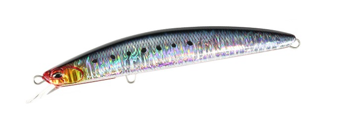
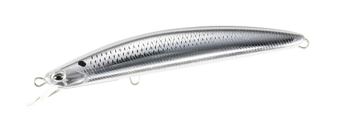
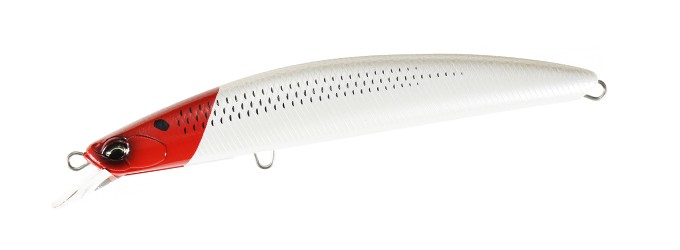
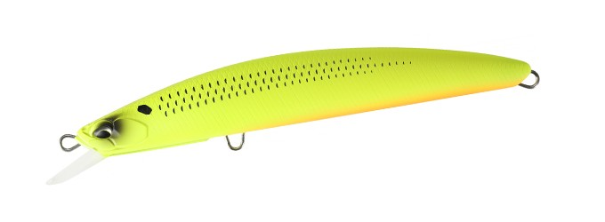

タイドミノーゴースト150F
（Tide Minnow GHOST 150F）
タイドミノーゴースト150F（Tide Minnow GHOST 150F）はDUO（デュオ）のフローティングミノーです。
巨魚に挑むためのタイドミノー「ゴースト」シリーズの150mmモデル。公式のキャッチコピーは「剛健かつ俊敏。更なる機動力を纏ったNEWゴースト誕生！」で、ゴーストの剛性とインパクトはそのままに、軽快な巻き心地と操作性を高めているのが最大の魅力です。

画像出典:DUO公式HP
スペック
- メーカー
- DUO（デュオ）
- タイプ
- フローティングミノー（重心移動・Dバレットシステム）
- 全長
- 150mm
- 自重
- 33g
- レンジ
- 0.5〜0.9m
- フック
- #1
- リング
- #5.5
- カラー
- 全10色
- ターゲット
- シーバス・オオニベ・青物
- 価格
- 3,410円（税込）
▼今すぐチェック

タイドミノーゴースト150Fの特徴
巨魚を獲る剛性はそのままに、投げやすさと巻きやすさを高めたゴーストの150mm
-
巨大魚を獲るための剛性と強度
ボディ＆パーツの剛性、フック強度など、巨大魚を獲るために必要な性能を突き詰めたモデル。オオニベやランカーシーバスなど、大場所の大型魚とのやり取りを想定して作られている。
-
強風下でも飛ばせるDバレットシステム
重心移動の「Dバレットシステム」とボディデザインで、強風下でも抜群の飛距離とキャスタビリティを発揮。サーフや河口の大場所で、沖のポイントまでしっかり届かせられる。
-
軽快な巻き心地とアピール力を強めたウォブンロール
流れの変化を敏感に捉える繊細さと、高い運動性能を両立。アクションはアピール力を強めたウォブンロールで、広範囲からターゲットを誘う。シリーズ従来の170Fより軽快に巻けるので、長時間投げ続けても疲れにくい。
タイドミノーゴースト150Fの使い方
基本はただ巻き。遠投して0.5〜0.9mのレンジをウォブンロールで引いてくる。流れの変化を敏感に捉えるミノーなので、流れのヨレや潮目に差しかかった時の引き抵抗の変化を感じながら巻くのがコツだ。
河口やサーフでは、流れに対してクロスに投げてドリフト気味に流し込むのも有効。強いウォブンロールで広く魚を寄せ、反応がなければ巻き速度やコースを変えて探っていきましょう。
タイドミノーゴースト150Fの得意な状況
サーフや大河川の河口など、大場所でオオニベやランカーシーバスを狙う状況が最大の出番。
強風で飛距離が出しにくい日や、コノシロなどの大型ベイトが入っている時期に、遠くの大物まで届かせたい場面で選びたい1本です。
ワンポイント
ゴーストシリーズには170F・170F HIGH TORQUEもあります。150Fはより軽く投げやすいモデルなので、シリーズを初めて使うなら150Fから、さらに大きなシルエットや強い引き抵抗が欲しい時は170Fへ、という使い分けがオススメです。
カラーにはグロー（蓄光）やUV（紫外線発光）対応のものもあるので、夜や濁りの強い日は発光系カラーを選ぶと存在をアピールしやすくなります。
オススメカラー
タイドミノーゴースト150Fは全10色展開。大型シーバス・オオニベ狙いでオススメのカラーを厳選して紹介します。

CPB0054 玄海イワシブラックバックとホログラムのフラッシングが強いイワシカラー。日中のベイトパターンの軸に。

CSA0617 UV銀ピカコノシロ銀ピカのボディにUV発光を加えたコノシロカラー。秋のコノシロパターンや晴れた日の澄み潮に。

ACC0647 パールレッドヘッドコノシロ定番レッドヘッドのコノシロ版。夜や濁りでもシルエットをしっかり見せられる。

ACC0597 マットチャートコノシロ強い濁りやローライトで目立つマットチャート。荒れたサーフや濁った河口のパイロットに。
画像出典:DUO公式HP
タイドミノーゴースト150Fに似ているルアー
-
 ナバロン150F
アイマ
詳細はこちら＞
ナバロン150F
アイマ
詳細はこちら＞
アイマとDUOが共同開発した150mmの万能ミノー。23gと軽めで、レンジ50〜150cmをよく飛びよく泳ぐ。磯・サーフ・河口の大物狙いで選択肢が重なる1本。
-
 タイドミノースリム178F
DUO
詳細はこちら＞
タイドミノースリム178F
DUO
詳細はこちら＞
同じタイドミノーシリーズの178mmロングミノー。重心移動のMLSで飛距離と泳ぎ出しを両立していて、さらに長いシルエットで見せたい時に。
-
 ザブラシステムミノー15F
ジップベイツ
詳細はこちら＞
ザブラシステムミノー15F
ジップベイツ
詳細はこちら＞
150mmの復刻ビッグミノー。キビキビ感を抑えた餌っぽい泳ぎで、スレた大物にじっくり見せたい時に。